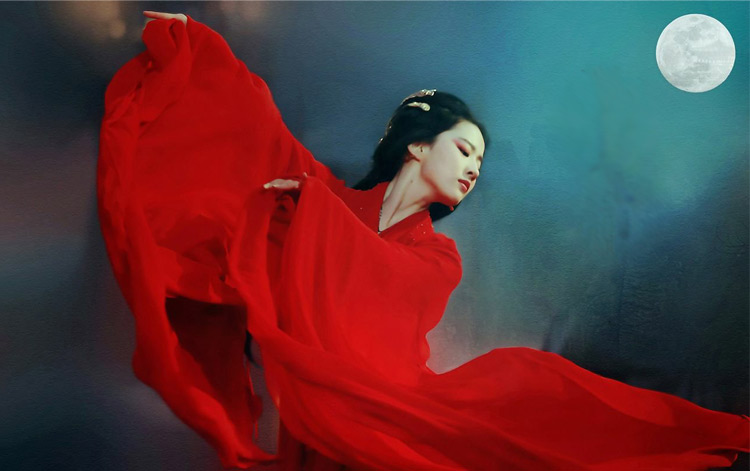

“你知道吗，我是个女性，女性的天空是低的，羽翼是稀薄的，不错，我要飞，但同时觉得，我会掉下来”。这是“20世纪30年代的文学洛神”——萧红的一段话，有点伤感但却真实的反应了那个时期女性在社会中的处境。中国历史上很长的一段时间里，女性几乎是和“家庭妇女”划等号的，如果老师问起你的梦想，可以是科学家、医生、工人甚至是农民叔叔，但却不可以是家庭主妇。这个角色所代表的体验和享受的生活状态也一并是被否定的，究其根源或许还是女性社会地位太低。
生在中国古代的女性在一定程度上是幸福的，被异性追求时总能收到许多的情书——“关关雎鸠，在河之洲。窈窕淑女，君子好逑”、“相思相见知何日，此时此夜难为情”、“从别後，忆相逢，几回魂梦与君同”……
但同时，也是很不幸的。她们大多内心空虚而绝望、每天围着厨房转、对风流在外的丈夫毫无控制能力，进而越发缺乏安全感和人格的独立而歇斯底里。
世界各地都爆发过不同程度的争取女权的运动，在这方面，法国、美国等国家觉醒较早，日本、中国则是后知后觉。一战期间，美国甚至允许妇女“像个男人一样”扛起枪去战斗，这对后期其女性主义发展造成了深远的影响。
在某种程度上，女性社会地位的提高和GDP、国际上的话语权等一样，是一个国家文明程度的代表。所以，现在的我们能和男孩子一样坐在明亮的教室里、可以考大学、可以朝九晚五上班、可以当官，可以在公共场合大吼一嗓子“我凶是因为你欠”。世界各地的女性甚至都有了一个专属的节日，比如中国的三八妇女节（尽管听起来不怎么舒服）、德国太太节、西班牙百女节、日本姑娘节、印度妈妈节……这其中最霸气测漏的当属瑞士妇女掌权日，没有任何啰嗦、毫不掩饰的告诉你——我们就是来掌权的，你咬我啊！
女性的节日虽然因地域、习俗等因素被冠以各种各样的名称，但内容都大同小异——只要你性别是女，我就可劲的宠你。妇女掌权日由1月4号开始，连过4天（小编觉得三八妇女节可以向这个看齐），在为期4天的节日中，家里大小事务全由妇女说了算，男人统统闭嘴。
这样的节日有一万种过法，被最多人采纳的做法就是买下购物车里所有的东西、把家里一干家务撂给男人、对男人颐指气使……另外一些有觉悟的女性也许会读本书或者甩开一切来一场说走就走的旅行，让身体和精神都在路上。不管怎么样，你胸大你说了算，只要你开心，怎么样都行！
1、瑞士妇女掌权日于每年1月4号开始，持续4天，在这期间，瑞士妇女同胞“想怎样就怎样”；
2、太太节、姑娘节、妇女节、妈妈节……世界各地都有为女性量身打造的节日，妇女地位在全世界得到了普遍的提高。